You don't need a huge house or a Pinterest-perfect library to build a genuinely cozy reading spot. You need a workable corner and a little creativity, tight spaces, awkward layouts, and rooms that barely fit a bed have all turned into some of the coziest reading nooks I've seen.
If you've been thinking you don't have the space for one, that's probably not actually true. You likely have a spot already. You just haven't labeled it as one yet.
Here's what actually makes a nook work, and then ten real, doable versions you can adapt to your own space.

10 Reading Nook Ideas Worth Trying
1. A Nook That Pulls Double Duty
In a small space, every inch should be doing more than one job if it possibly can. A reading nook is a great candidate for combining with something else entirely.
A window seat with drawers or shelving built into the base, a storage bench that doubles as seating, or a reading corner that shares space with a small desk all work beautifully.
This is the approach that gets the most out of limited square footage without ever feeling like a compromise.
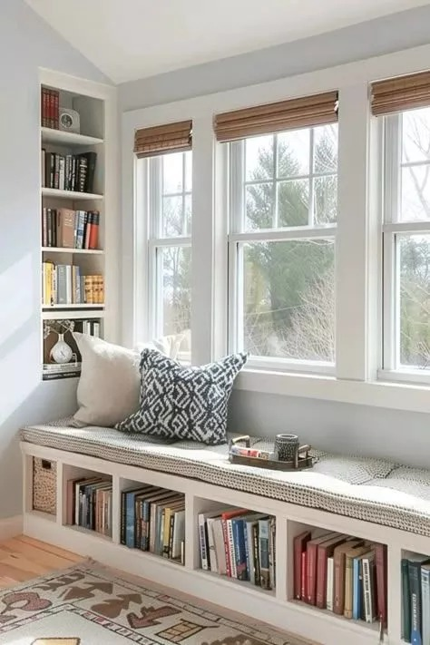
2. Minimalist, On Purpose
For the less-but-better crowd: one chair, one light source, one small table or shelf. That's genuinely the whole list, nothing more.
No clutter, no overload, just essentials. A clear space like this helps your brain actually slow down faster than a busier one ever could.
It also happens to look effortlessly put-together, which is a nice bonus for something that requires so little upkeep.
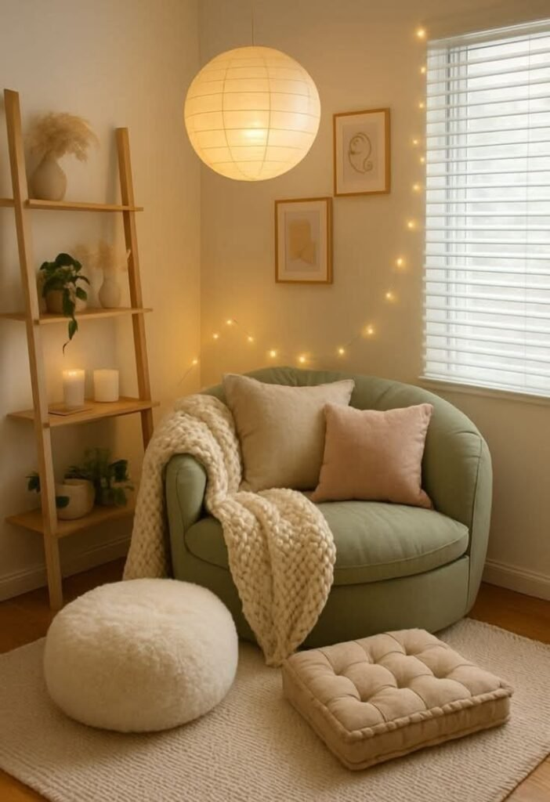
3. A Hanging Chair
For something with a little more personality, a hanging chair adds gentle movement and a completely different feel from a standard seat.
You'll need a sturdy ceiling hook, a compact hanging chair, a soft cushion or throw, and a nearby light source to finish the setup.
One real caution here: confirm your ceiling can actually support it before committing to anything. Cozy is the goal, not a trip to urgent care.
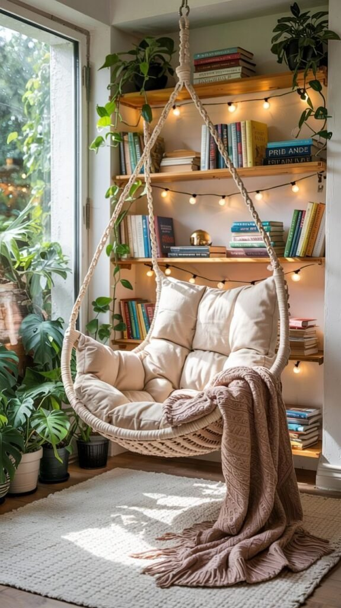
4. The Space Under the Stairs
That awkward triangle under a staircase is almost always used for pure storage. It can genuinely do so much more than that.
A custom or compact bench, built-in shelving if you can manage it, warm lighting, and a neutral palette keep the space feeling open rather than cramped.
It takes a bit more effort than most ideas on this list, but the payoff genuinely looks like something out of a design feature once it's finished.
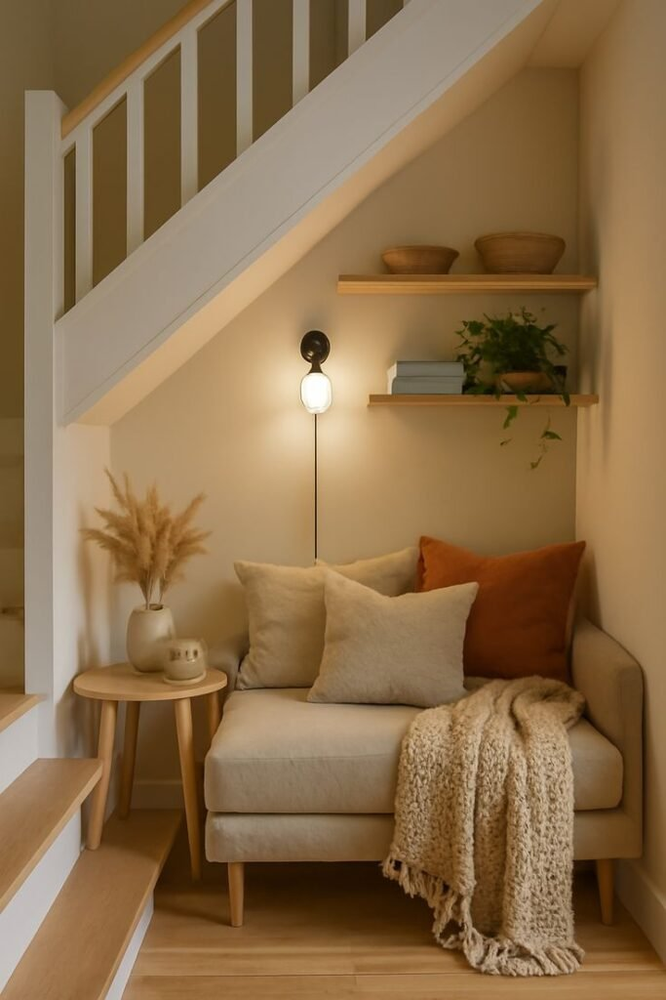
5. A Closet, Reimagined
This sounds like a stretch until you actually see it done in person. A spare or underused closet converts into a surprisingly good reading nook.
Remove the doors or just leave them open, add a bench or cushions inside, install soft lighting, and use the existing shelving for books.
The result is a fully enclosed, genuinely distraction-free little hideout, which is honestly more than most dedicated reading rooms manage to pull off.
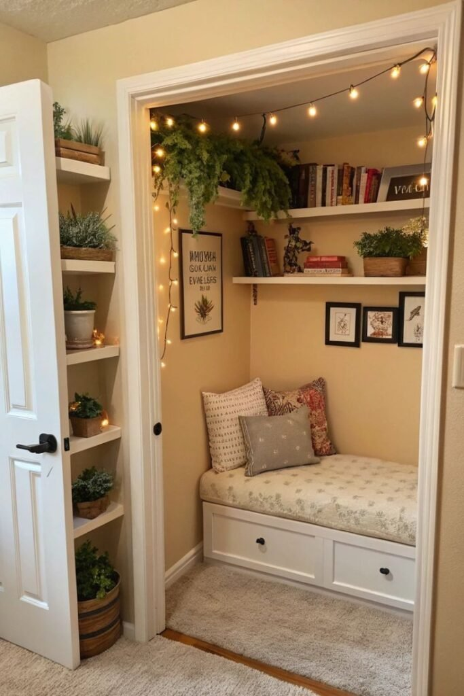
6. A Dedicated Spot in the Bedroom
Reading on the bed usually ends one of two ways: you fall asleep, or you end up scrolling your phone instead. A separate little zone, even a small one, fixes both problems at once.
A chair or floor cushion near a window or open wall, a soft throw, a bedside-style lamp, and a small stack of books is all the setup this actually needs.
Pulling reading out of the bed itself genuinely changes the nighttime routine for a lot of people, worth trying even if it sounds like a small shift at first.
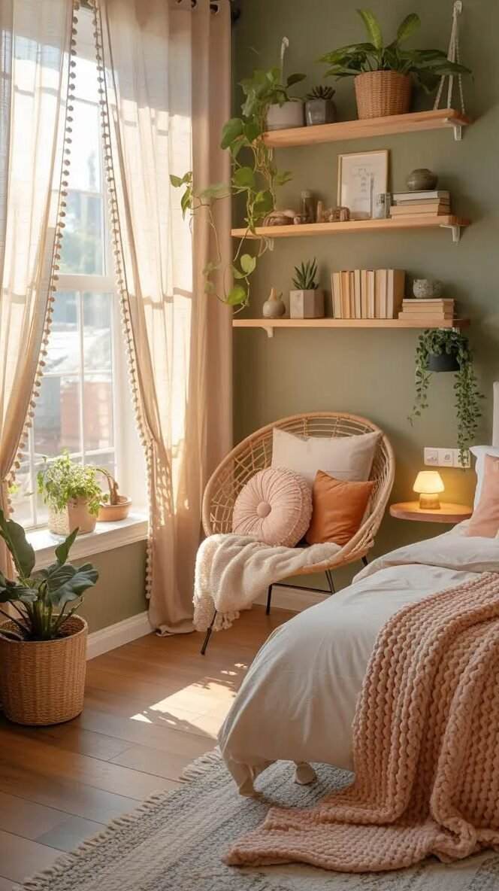
7. Built Into a Bookshelf
If you already own a bookshelf, you're most of the way to this one already. Add a comfortable seat right beside it and you've got a nook that's both functional and genuinely good-looking.
Let the bookshelf be the backdrop, keep the seating simple, and make sure a reading lamp stays within easy reach.
The books themselves do most of the decorating here. Everything stays within arm's reach this way, no getting up mid-chapter to go find your next read.
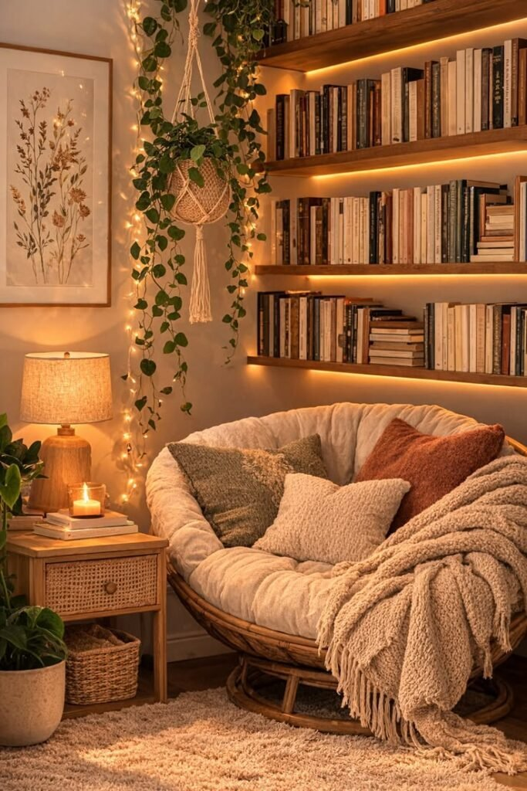
8. Floor Seating
No chair, no problem at all. Floor seating feels relaxed and a little luxurious in its own low-key way, and it saves a genuine amount of space compared to a chair or sofa.
A thick floor cushion or pouf, a layered rug underneath for softness, something to lean back against, and low ambient lighting cover everything you actually need.
This setup works especially well in small apartments or minimalist spaces where bulky furniture just isn't really the move.
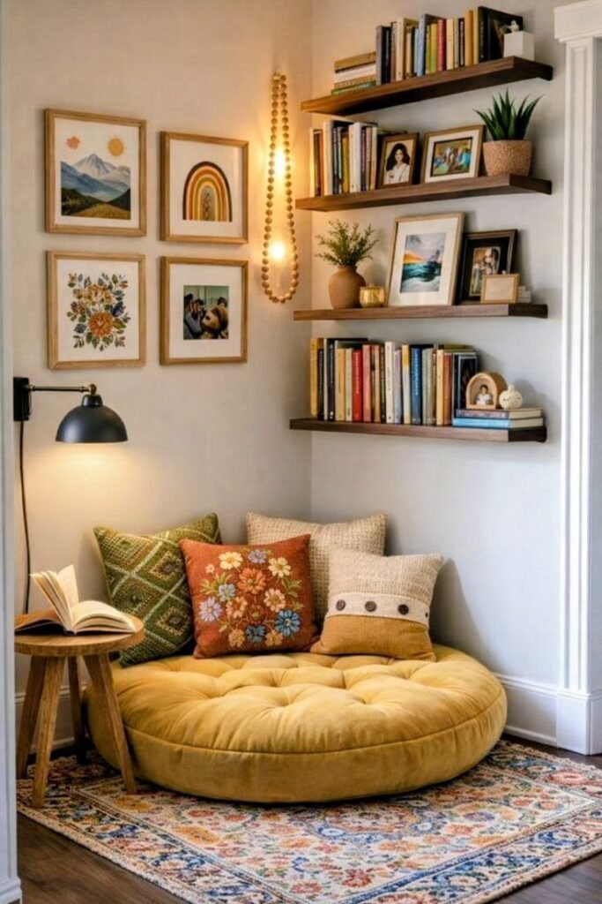
9. A Forgotten Corner, Claimed
Every home has one of these, a corner too small for real furniture, too visible to just ignore outright. That corner is your reading nook waiting to happen.
A compact accent chair, a floor lamp with warm light, a small round side table, and one plant for softness is genuinely all it takes to pull this off.
Resist the urge to overfill it. This corner doesn't need to display your whole personality, a few well-chosen pieces read as more intentional than a crowded one ever does.
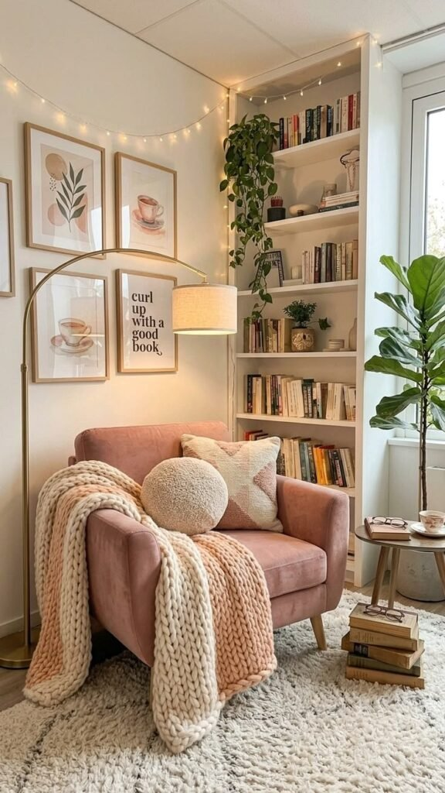
10. A Real Window Seat
The classic for a reason. Natural light, a view, and a genuinely comfortable seat is a combination that works every single time.
You don't need a built-in bench to pull this off, either. A chair pulled up close to a window with sheer curtains and a small side table does the exact same job.
Keep the setup simple: a comfortable seat, soft layering, and a small surface for your coffee or current book. That's really the whole formula.
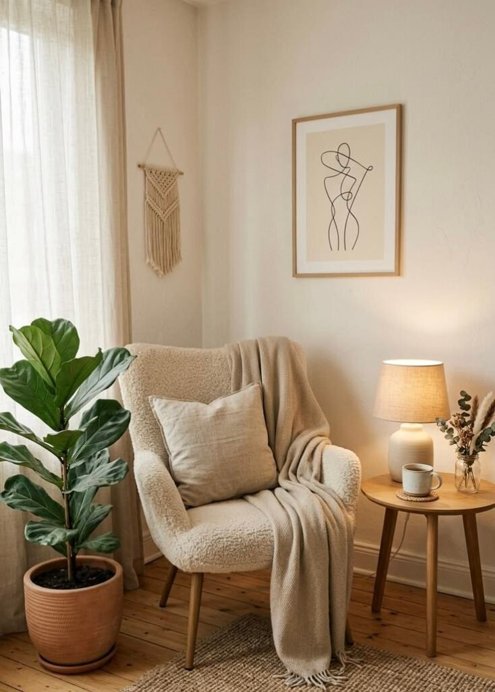
Planning Yours Without Overspending
Before jumping into ideas, a quick plan saves a lot of second-guessing: pick the spot without overthinking it, choose seating first since everything else builds around it, add lighting (natural first, then a warm artificial source), layer in comfort, keep a few essentials nearby, and stop before clutter creeps in. That last step is where most nooks go wrong.
None of this requires a big budget, either. Floor cushions, a secondhand chair, a DIY shelf, or a repurposed stool can look just as good as anything bought new. If you're going to spend real money anywhere, put it toward the seat and the lighting, everything else, including decor and storage, can stay flexible.
A reading nook also just makes a small home feel more intentional rather than cramped, and that distinction matters more than people expect once the space is actually finished.
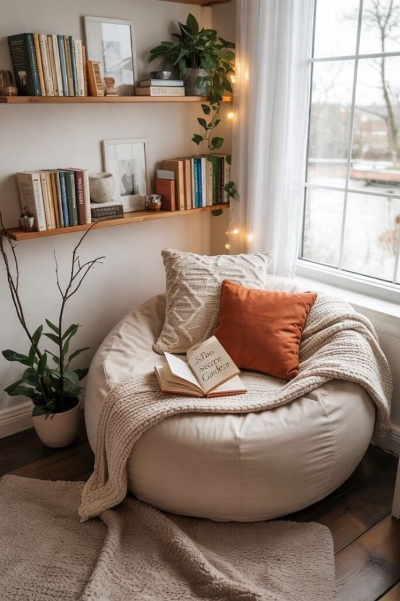
Why a Reading Nook Is Worth the Effort
A reading nook isn't just a decorating flourish, it genuinely changes how a space gets used. Sitting in the same dedicated spot repeatedly trains your brain to associate it with relaxing, the same way your bed signals sleep and your desk signals work.
It also solves a quieter problem: small homes waste space in sneaky ways, corners, window edges, the gap between furniture that never quite works for anything. A nook turns those dead zones into something you actually use, and it layers in personality (seating, lighting, texture) without adding clutter.
Texture does a lot of the emotional work here too. Throws, cushions, and rugs read as safety to your brain almost instantly, and a slightly enclosed spot, a corner, an alcove, even just a curtain, helps you actually disconnect once you sit down.
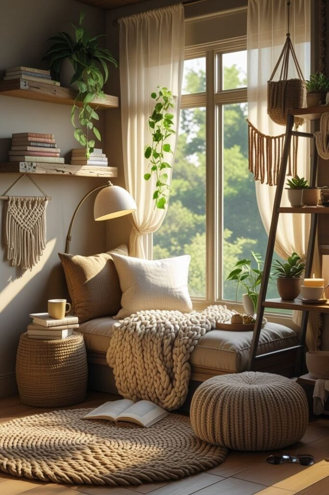
Final Thoughts
Here's the honest takeaway: you don't need more space. You need a better use of the space you already have.
A reading nook was never really about square footage. It's about intention, claiming one small spot and making it genuinely yours, rather than letting it stay another dead corner.
Start with whichever idea matches the layout you're actually working with, and build from there at your own pace.